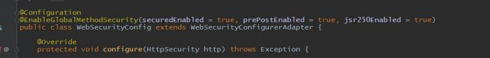
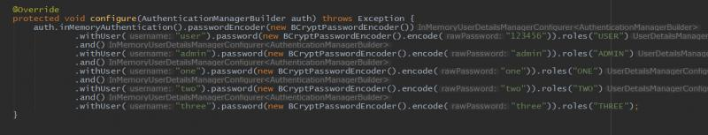
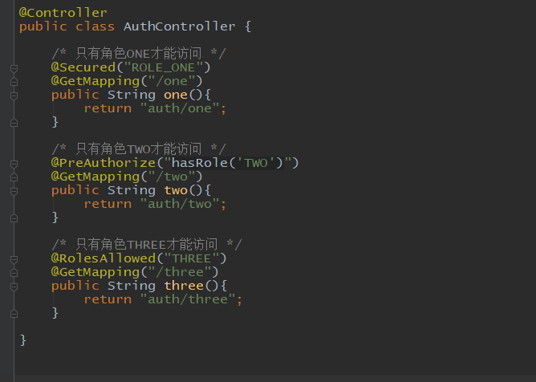
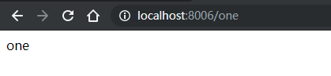
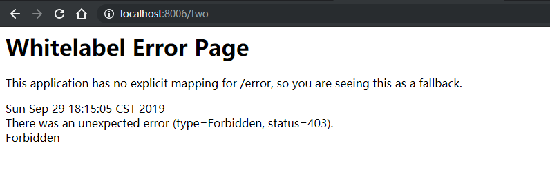
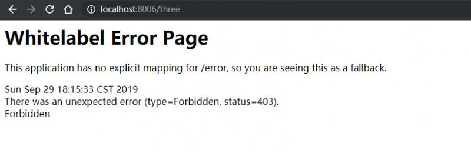
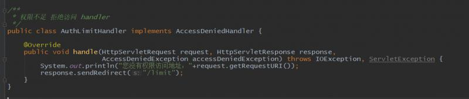
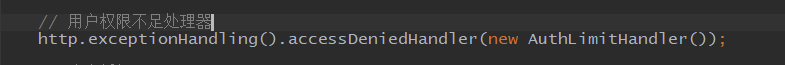
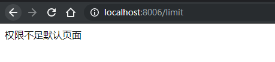
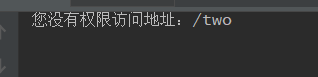

前面讨论过，Web应用的安全管理，主要包括两个方面的内容，一个是用户身份的认证，即用户登录的设计，二是用户授权，即一个用户在一个应用系统中能够执行哪些操作的权限管理。前面介绍了登录，下面简单介绍一下用户授权。用户拥有的权限是根据用户的角色来决定的，并且security中，用户的权限可以控制到方法级别。
每个url的访问都是定义在controller方法上面的，因此需要配置方法权限。开启方法级别的权限，需要引入@EnableGlobalMethodSecurity注解：

注解中有三个参数，securedEnabled = true 表示方法权限控制可以使用安全注解 @Secured, 该注解的值 必须在现有的角色名称前加上ROLE_前缀，如 @Secured("ROLE_ADMIN")，多个角色可以这样写 @Secured({"ROLE_ONE","ROLE_TWO"})，表示最少有其中一个角色才能访问。
prePostEnabled = true 表示方法权限前置注解 @PreAuthorize,@PostAuthorize启用，注解 @PreAuthorize 适合进入方法之前验证授权。 @PreAuthorize可以兼顾，角色/登录用户权限，参数传递给方法等等 ，@PreAuthorize("true") 表示允许所有访问，注解 @PostAuthorize 不经常使用，它在检查授权方法之后才被执行，所以它适合用在对返回的值作验证授权。Spring EL提供可在表达式语言来访问并从方法返回 returnObject 对象来反映实际的对象。@PreAuthorize单个角色可以这样写 @PreAuthorize("hasRole('TWO')")，多个角色可以这样写 @PreAuthorize("hasRole('ONE') AND hasRole('TWO')")，@PreAuthorize("hasRole('ONE') OR hasRole('TWO')")注意and和or的意义。AND表示拥有所有权限才能访问，OR表示拥有任意一种权限就能访问。
jsr250Enabled = true 表示 启动了JSR-250的注解支持，在方法上使用注解来控制访问权限，注解@DenyAll 拒绝所有访问，注解 @PermitAll 允许所有访问，注解 @RolesAllowed({"USER", "ADMIN"}) 该方法只要具有"USER", "ADMIN"任意一种权限就可以访问。这里可以省略前缀ROLE_，实际的权限可能是ROLE_ADMIN。
我们在内存中新建三个用户，分别是 one/one，two/two，three/three，他们三个的角色分别是 ONE，TWO，THREE，

三个用户，分别拥有三个不同的角色，下面新建三个页面，分别赋予三个角色权限：

三个方法的权限注解分别使用了三种方式赋予角色。下面我们登录one，查看效果，one页面是可以访问的：

two页面禁止访问：

显示403，forbidden。three页面也是一样：

其它两个用户可以自行登录测试。
前面介绍登录成功处理器，用户权限不足的情况也可以统一进行处理，让权限不足的情况下，跳转到同一个页面。下面新建类
AuthLimitHandler，实现AccessDeniedHandler接口：

/limit页面可以自己创建，完成后，在配置类中配置权限不足处理器：

重启访问，就可以看到处理效果：


代码地址：https://gitee.com/blueses/spring-boot-security 06